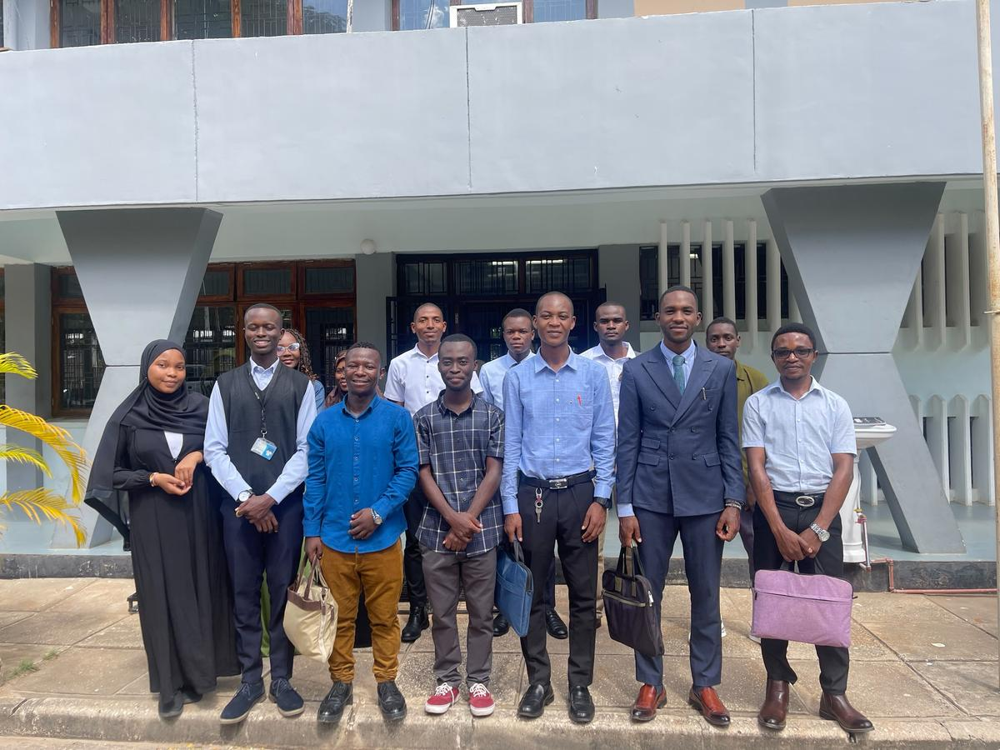

Your Representatives
Student Leadership 2025/2026
Meet the elected student leaders working on your behalf at EASTC.
Executive Committee
Student Leaders

EASTCSO Student Leadership Team — Academic Year 2025/2026, EASTC Campus, Dar es Salaam
President
Mario Macha
President
Executive Committee
3rd Year
Nesta Msola
Vice President
Executive Committee
3rd Year
Samuel Kipkemoi
Secretary General
Executive Committee
2nd Year
Amina Nkosi
Treasurer
Finance Committee
2nd Year
David Juma
Academic Affairs Rep.
Academic Committee
3rd Year
Grace Wanjiku
Welfare Coordinator
Welfare Committee
2nd Year
Brian Temu
Sports Captain
Sports & Recreation
2nd Year
Lilian Kimani
Culture & Arts Rep.
Culture Committee
1st Year
Full Directory
Leadership Table
| Name | Position | Committee | Year | Contact |
|---|---|---|---|---|
| Mario Macha | President | Executive | 3rd Year | m.macha@eastc.ac.tz |
| Nesta Msola | Vice President | Executive | 3rd Year | n.msola@eastc.ac.tz |
| Samuel Kipkemoi | Secretary General | Executive | 2nd Year | s.kipkemoi@eastc.ac.tz |
| Amina Nkosi | Treasurer | Finance | 2nd Year | a.nkosi@eastc.ac.tz |
| David Juma | Academic Affairs Rep. | Academic | 3rd Year | d.juma@eastc.ac.tz |
| Grace Wanjiku | Welfare Coordinator | Welfare | 2nd Year | g.wanjiku@eastc.ac.tz |
| Brian Temu | Sports Captain | Sports | 2nd Year | b.temu@eastc.ac.tz |
| Lilian Kimani | Culture & Arts Rep. | Culture | 1st Year | l.kimani@eastc.ac.tz |